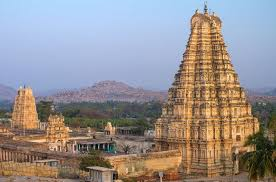
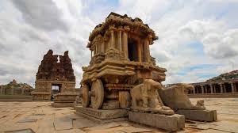
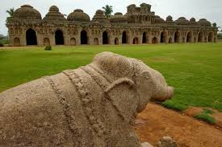
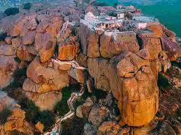
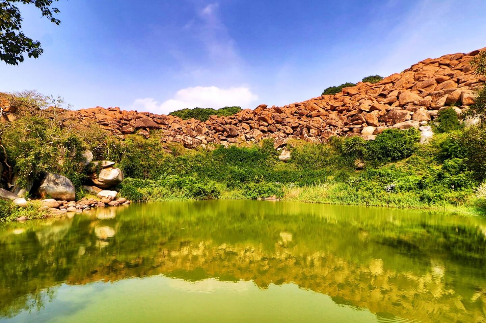
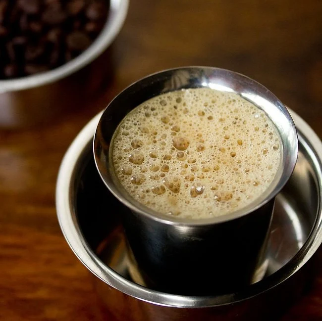

Hampi: The Forgotten Empire
Hampi, a UNESCO World Heritage site, was once the prosperous capital of the Vijayanagara Empire in the 14th century. Located in the shadows of the Tungabhadra River, it is a landscape where history is etched into massive granite boulders. Known as "Pampa Kshetra," it is widely believed to be the mythical kingdom of Kishkindha from the Ramayana.
Today, Hampi is an open-air museum. The ruins stretch across 4,100 hectares, featuring over 1,600 surviving remains including forts, riverside features, royal and sacred complexes, temples, shrines, and pillared halls. The architectural style reflects the power and wealth of an empire that once controlled nearly all of Southern India.
For the traveler, Hampi is a place of duality. On one side of the river lies the spiritual and historical ruins; on the other, the "Hippy Island" (Anegundi) offers a laid-back vibe with paddy fields and bouldering opportunities. It is a destination that demands slow travel and curiosity.

🕉️ The Sacred Center: Spiritual Heart
Culture: This area revolves around the living Virupaksha Temple. Pilgrims and travelers mingle here, and the atmosphere is thick with the scent of incense and the sound of temple bells.
Environment: A bustling area dominated by the towering Gopuram (entrance tower) of the Virupaksha Temple. The river creates a serene backdrop, with ancient stone "ghats" (steps) leading down to the water where pilgrims bathe.
History: This is the oldest part of Hampi. It predates the Vijayanagara Empire, with some shrines dating back to the 7th century. It was built around the myth of Pampa (the river goddess) and Shiva.
📸 Sacred Locations

Virupaksha Temple

The Stone Chariot (Vittala Temple)
👑 The Royal Center: Imperial Glory
Culture: Reflects a "Cosmopolitan Royalty." The architecture here (like the Lotus Mahal) is a blend of Hindu and Islamic styles, showing that the Vijayanagara kings were influenced by the neighboring Sultanates.
Environment: The terrain here is flatter and more organized. It feels less like a wilderness and more like a ruined city, with massive stone platforms and manicured lawns (restored by the ASI).
History: This was the "Fortified City." It was protected by seven layers of walls. This is where the empire’s wealth was most visible before the city was sacked.
📸 Royal Locations

Elephant Stables
🐒 Anegundi: The Ancient Realm
Culture: A blend of ancient mythology and modern "backpacker" vibes. It is home to local craft cooperatives like the The Kishkinda Trust, which makes products from banana fiber.
Environment: Rural, lush, and incredibly green. It is filled with vibrant paddy fields, banana plantations, and massive granite hills. It feels more like a traditional Indian village than a tourist site.
History: Anegundi is believed to be the kingdom of Kishkindha from the Ramayana. It is older than Hampi itself and served as the first capital before the kings moved across the river for better defense.
📸 Anegundi Locations

Anjanadri Hill

Pampa Sarovar
🍛 Food in Hampi
Because Hampi is a major religious site, the "temple side" is strictly vegetarian, while the "island side" (Anegundi) offers more international variety for the global traveler.
Hampi Thali: A traditional South Indian meal served on a banana leaf. It includes rice, Sambar (lentil stew), Rasam (spicy soup), and various vegetable "palya" (stir-fries). It is the quintessential taste of the region.
Filter Coffee: You haven't experienced South India without its iconic filter coffee—strong, frothy, and served in a steel "tumbler and dabra."
Benne Dosa: A specialty from the nearby Davanagere region. These are crispy rice crepes made with generous amounts of Benne (butter) and served with spicy coconut chutney and potato mash.
Coracle Bread & Local Snacks: While crossing the river in a Coracle (a round bamboo boat), you'll often find vendors selling fresh coconut water and local fried snacks like Mirchi Bajji (chili fritters).
Global Cafe Food: On the Virupapur Gaddi side, the menu shifts to wood-fired pizzas, Israeli Shakshuka, and pancakes, catering to the long-term international backpacker community.

Filter Coffee